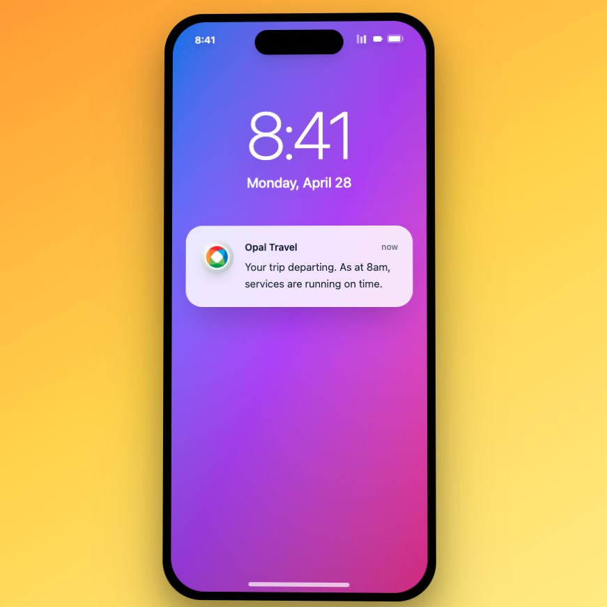
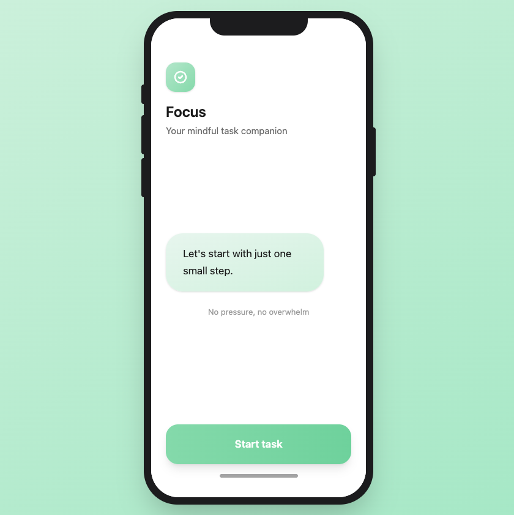

4 years crafting accessible, user-centred products across government and enterprise, translating complexity into journeys people actually enjoy.
Interviews revealed a consistent fragmentation pattern: TripView for live status, Google Maps for routing, Opal for payment only. The redesign consolidated the workflow into a single surface, prioritising saved-route access and real-time disruption alerts at the highest-friction moment of the commuting day.


Research identified a consistent failure point: the task list requires self-direction before any work can begin, and that decision is exactly where initiation breaks down. Focus replaces it with a conversational assistant that selects the next task and presents it, eliminating the planning step that was driving avoidance. Validated through moderated testing within a 3-day sprint.
User Design case studies spanning research, synthesis, and design. Each grounded in real user behaviour and carried through to a working prototype.
Interviews revealed a consistent fragmentation pattern: TripView for live status, Google Maps for routing, Opal for payment only. The redesign consolidated the workflow into a single surface, prioritising saved-route access and real-time disruption alerts at the highest-friction moment of the commuting day.
Read case study →Research identified a consistent failure point: the task list requires self-direction before any work can begin, and that decision is exactly where initiation breaks down. Focus replaces it with a conversational assistant that selects the next task and presents it, eliminating the planning step that was driving avoidance. Validated through moderated testing within a 3-day sprint.
Read case study →I'm a UX Designer who likes untangling messy problems and making things work better for people.
I've spent the last 4 years working across government and enterprise. Most of my work focuses on the high-stakes stuff: accessibility, design systems, and complex product workflows. I'm at my best when a project feels a bit fragmented. I love digging into the research to find the one structural shift that makes everything else click into place.
Because I have a background in frontend development, I speak the same language as engineers. This means I don't just hand over pretty mockups. I stay in the weeds to make sure the final product is actually feasible, accessible, and as polished as the original vision.
What I care about
I'm a big believer that design should be inclusive by default. Whether I'm designing for neurodiversity or simplifying a government service, I want to make sure the "edge cases" feel like the primary focus. I advocate for the user, but I always keep an eye on the business goals to make sure we're shipping things that actually move the needle.
When I'm not in Figma
You'll probably find me hiking, exploring a trail somewhere, or catching up with friends over coffee. I'm always up for a chat about design, tech, or whatever's on your mind. Feel free to reach out!